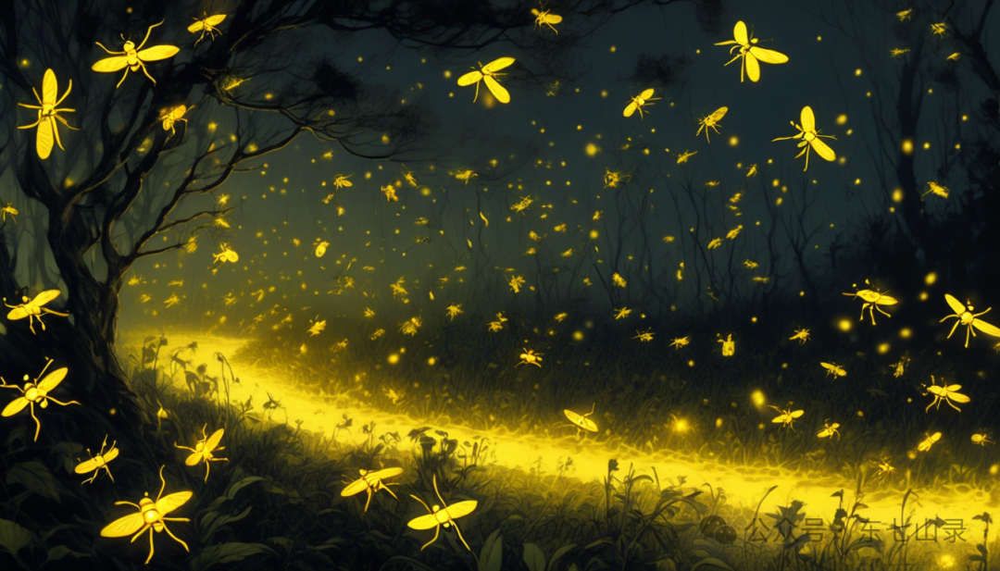

“生灵的魂魄，在山上荡碎，挥洒而下，和荡魂山结合。久而久之，就能形成胆石。而一些胆石中，藏有胆识蛊，可以壮人魂魄。这就好像是毒蛇栖息的地方，常有解毒的药草。万物竞争，大道平衡，有生就有死。”
——《人祖传》
话说太日阳莽向天空冲刺，最终陨落身亡。作力父亲的人祖得知后，异常悲痛，找到智慧蛊发难。就是智慧蛊教会太日阳莽喝酒，最终才导致一系列的事情。
智慧蛊连忙道：“人祖啊人祖，你不要找我麻烦。你的儿子虽然死了，但也不是不可以复活啊。只要你进入生死门，带着他走向生路，走到阳光之下，那他就能复活了。”
人祖楞了一下，继而大喜，忽然又大怒。他伸手捏住智慧蛊，质问道：“智慧蛊啊智慧蛊，你当我还像当初那样懵懂无知吗？生死门是凶险之地，进去了就再也出不来。你害了我儿子不说，还想再害死我吗？”
智慧蛊连忙道：“其他生灵不懂得进出生死门的窍门，所以它们出不来。但是这些窍门我知道啊，我统统告诉你。你是活人，要进入生死门，就得从死路进去。这路非同寻常，乃是宿命蛊离开公平蛊时，留下来的路，称之为命途。命途中有大量的忧患蛊，你要从死路进去，就得拥有勇气蛊。这样你就不怕忧患的折磨了。”
“当你进入生死门中，看到公平蛊时，你已经死了。但同时，你也会看到你的大儿子太日阳莽的魂魄。你将其带走，顺着另一条路——生路回来。生路是宿命蛊拜访公平蛊时，走出的痕迹，也是命途。”
“但在这命途当中，有三个关卡。一座是荡魂山，一个是落魄谷，一个是逆流河。你要翻过荡魂山，就要敲碎山上的胆石，获得胆识蛊的帮助。要越过落魄谷，就要寻到信念蛊的帮助。要闯过逆流河，就要一刻不停地前进，千万不要有一步的停留。”
人祖听信了智慧蛊的话，便将其放走。他很快就寻找到信念蛊。自从他双眼瞎了之后，信念蛊的光就是他唯一能看见的明亮。
“人祖啊，我感受到了你要救回大儿子的坚定决心。我愿意帮助你，但是请你干万不要放弃这个决心。当你放弃的时候，我就会离你远去了。”信念蛊关照道。
人祖又找到勇气蛊。勇气蛊和希望蛊，是一对好伙伴。人祖拥有希望蛊，常常见到勇气蛊，和它的关系也不错。得到勇气蛊的帮助之后，人祖便来到生死门前，踏步进入死路。
死路一片黑暗，大量的忧患蛊如黄色的萤火虫，海啸般地向人祖包围过来。这时勇气蛊发出光辉，帮人祖赶跑了忧虑蛊。

死亡需要勇气。
人祖成功地走下去，他的身体越来越白，越来越飘忽，渐渐变成了一个鬼魂。他又能“看见”了。当他来到死路的尽头，在一片深邃安定的黑暗中，他见到了公平蛊。
他为公平蛊巨大的身躯感到极为惊讶：“你就是公平蛊吗？为什么你的身躯这么巨大？山峰和你相比，就像是一粒微尘。大海和你相比，仿佛是一颗米粒。”
公平蛊的声音极为恢弘：“生死是世间最大的公平，当我身处生死门中，我就会变得无比的庞大。人祖啊，你来到这里，是想带走你的大儿子吧。尽管去吧，他就在那里。”